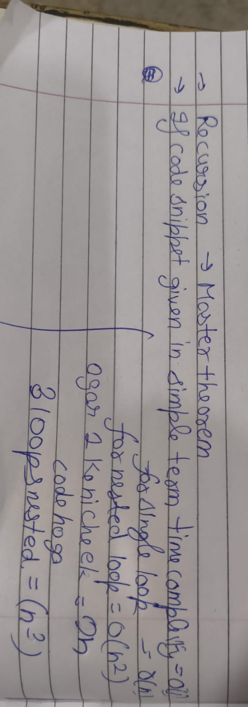
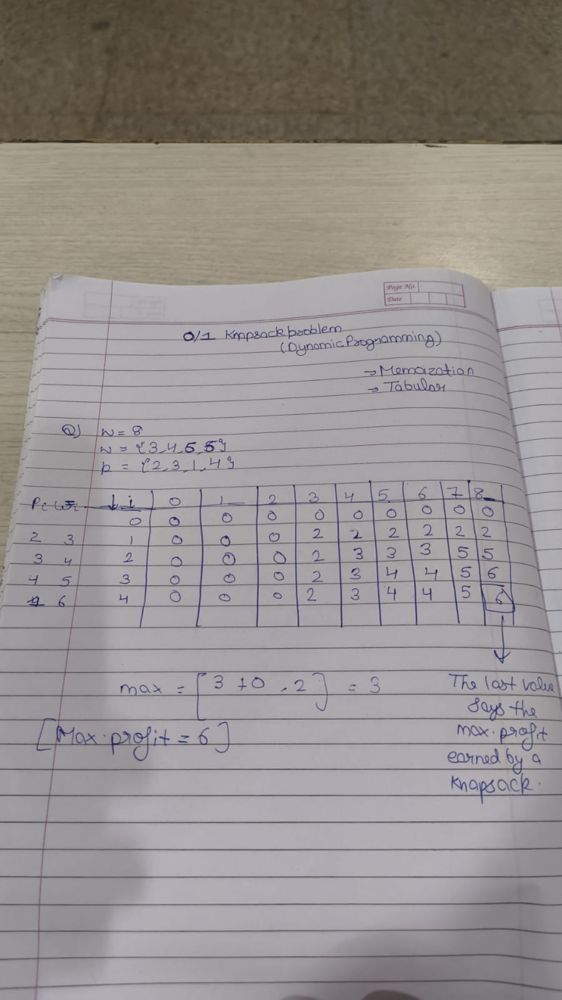
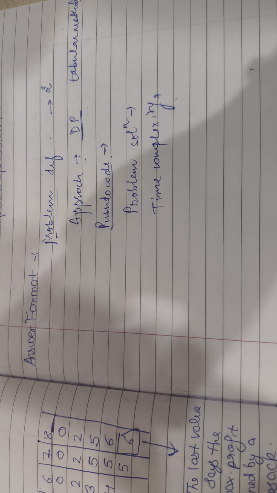
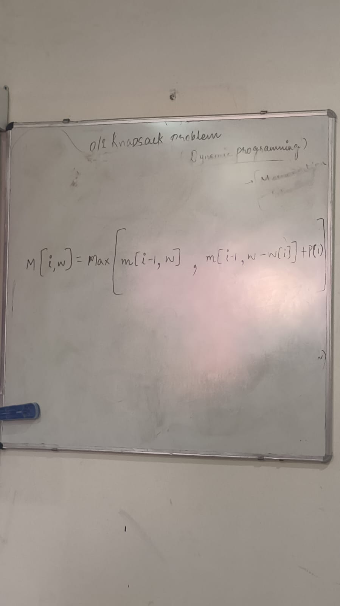
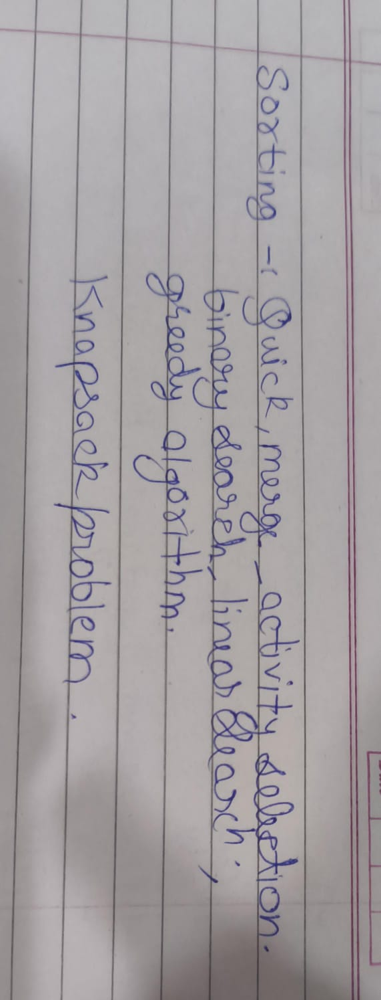

Note Title
Note description
Curriculum reference for Units 1 & 2 (22 Hours): Asymptotic bounds, Recurrence solving via Master Theorem, Divide & Conquer, Greedy matroids, and Dynamic Programming. Features classroom handwritten notes transcription, highest-yield 20-mark model answers (structured by official 5-part marking scheme), and interactive algorithm solvers.
Complexity & Foundations
D&C, Greedy & DP
20-Mark Exam Hotspots
Whiteboard & Handouts
Direct transcription and high-resolution scans of classroom whiteboard diagrams, loop complexity rules, 0/1 knapsack tables, and the official 5-part university answering framework.

Single vs nested loops, sequential 2n code, 3-nested loops (n³), and Master Theorem pointer.

Handwritten 5×9 DP table calculation, cell transitions, and final maximum profit = 6.

Teacher's 5-step marking scheme: Definition, Approach, Pseudocode, Solution, Complexity.

M[i, w] = max(M[i-1, w], M[i-1, w - w[i]] + P[i]) Bellman equation written on lecture whiteboard.

QuickSort, MergeSort, Activity Selection, Binary Search, Linear Search, Greedy & Knapsack.
These 7 questions represent the highest probability 20-mark and 15-mark questions in Semester III DAA university papers. Every answer strictly follows the teacher's 5-point answering standard.
0/1 Knapsack Formulation: We are given $n$ items, each with an integer weight $w_i > 0$ and integer profit $p_i > 0$, and a knapsack with maximum weight capacity $W$. We must select an assignment vector $x = \langle x_1, x_2, \dots, x_n \rangle$ where $x_i \in \{0, 1\}$ (each item is either completely chosen or completely left behind) to:
Fractional Knapsack Formulation: Here, items can be broken down into fractions, meaning $x_i \in [0, 1]$. We can take an arbitrary fraction of an item if remaining capacity is less than its full weight.
Why Greedy Works for Fractional Knapsack: Fractional Knapsack exhibits the Greedy-Choice Property: sorting items by value-to-weight ratio $r_i = p_i / w_i$ in descending order and greedily filling capacity guarantees global optimality because the knapsack can always be filled to 100% capacity with the densest value density.
Why Greedy FAILS for 0/1 Knapsack (Classic Counterexample):
Knapsack Capacity $W = 50$.
Item 1: $w_1 = 10, p_1 = 60 \implies r_1 = 6.0$/kg
Item 2: $w_2 = 20, p_2 = 100 \implies r_2 = 5.0$/kg
Item 3: $w_3 = 30, p_3 = 120 \implies r_3 = 4.0$/kg
Greedy Selection (by ratio): Takes Item 1 ($w=10, p=60$) + Item 2 ($w=20, p=100$). Remaining capacity = $20$. Cannot fit Item 3 ($w=30$). Greedy Profit = 160.
Optimal DP Selection: Takes Item 2 ($w=20, p=100$) + Item 3 ($w=30, p=120$). Total weight = $50 \le 50$. Optimal Profit = 220!
Conclusion: Empty space left by indivisible items penalizes the greedy heuristic. Therefore, 0/1 Knapsack requires Dynamic Programming with Bellman's principle of optimality.
Bellman Recurrence Relation (Class Note #4):
def knapsack_01(n: int, W: int, weights: list, profits: list):
# dp[i][w] = maximum profit using a subset of items 1..i with capacity w
dp = [[0] * (W + 1) for _ in range(n + 1)]
for i in range(1, n + 1):
wi = weights[i - 1]
pi = profits[i - 1]
for w in range(1, W + 1):
if wi > w:
dp[i][w] = dp[i - 1][w]
else:
dp[i][w] = max(dp[i - 1][w], dp[i - 1][w - wi] + pi)
max_profit = dp[n][W]
# Backtrack to identify selected items
selected_items = []
curr_w = W
for i in range(n, 0, -1):
if dp[i][curr_w] != dp[i - 1][curr_w]:
selected_items.append(i) # Item i was included
curr_w -= weights[i - 1]
return max_profit, selected_itemsInput Parameters: $W = 8$, Items $n = 4$
Item 1: $w_1 = 3, p_1 = 2$ | Item 2: $w_2 = 4, p_2 = 3$ | Item 3: $w_3 = 5, p_3 = 4$ | Item 4: $w_4 = 6, p_4 = 1$ (Class Note set)
| Item ($i$) | $(p_i, w_i)$ | w = 0 | w = 1 | w = 2 | w = 3 | w = 4 | w = 5 | w = 6 | w = 7 | w = 8 |
|---|---|---|---|---|---|---|---|---|---|---|
| i = 0 | Base | 0 | 0 | 0 | 0 | 0 | 0 | 0 | 0 | 0 |
| i = 1 | (2, 3) | 0 | 0 | 0 | 2 | 2 | 2 | 2 | 2 | 2 |
| i = 2 | (3, 4) | 0 | 0 | 0 | 2 | 3 | 3 | 3 | 5 | 5 |
| i = 3 | (4, 5) | 0 | 0 | 0 | 2 | 3 | 4 | 4 | 5 | 6 |
| i = 4 | (1, 6) | 0 | 0 | 0 | 2 | 3 | 4 | 4 | 5 | 6 |
Cell Transition Highlight (as shown in student notebook):
Item Backtracking Trace: $M[4, 8] == M[3, 8] \implies$ Item 4 NOT picked. $M[3, 8] \ne M[2, 8] \implies$ Item 3 picked! Capacity remaining = $8 - 5 = 3$. At row 2, $M[2, 3] == M[1, 3] \implies$ Item 2 NOT picked. At row 1, $M[1, 3] \ne M[0, 3] \implies$ Item 1 picked! Capacity = $3 - 3 = 0$.
Final Answer: $\text{Selected Items} = \{ \text{Item 1}, \text{Item 3} \}$, Total Weight = $3 + 5 = 8$, Maximum Profit = 6.
Divide-and-Conquer algorithms partition a problem of size $n$ into $a$ subproblems, each of size $n/b$, with $f(n)$ work spent outside the recursive calls (partitioning and combining). The recurrence is expressed as:
The recursion tree has depth $\log_b n$ and the number of leaves at the deepest level is $a^{\log_b n} = n^{\log_b a}$. The core intuition of Master Theorem is a "tug-of-war" between the work done at the leaf nodes ($\Theta(n^{\log_b a})$) and the work done at the root ($f(n)$).
Let $c_{crit} = \log_b a$. We compare $f(n)$ asymptotically with the watershed function $n^{\log_b a}$:
$T(n) = 2T(n/2) + \Theta(n)$
$a = 2, b = 2, f(n) = \Theta(n)$
$\log_b a = \log_2 2 = 1 \implies n^{\log_b a} = n^1 = n$.
Since $f(n) = \Theta(n^1)$, this falls under Case 2.
$T(n) = T(n/2) + \Theta(1)$
$a = 1, b = 2, f(n) = \Theta(1) = n^0$
$\log_b a = \log_2 1 = 0 \implies n^{\log_b a} = n^0 = 1$.
Since $f(n) = \Theta(n^0)$, this falls under Case 2.
$T(n) = 7T(n/2) + \Theta(n^2)$
$a = 7, b = 2, f(n) = \Theta(n^2)$
$\log_b a = \log_2 7 \approx 2.807 \implies n^{\log_b a} = n^{2.807}$.
Since $n^2 = O(n^{2.807 - \epsilon})$ ($\epsilon \approx 0.807$), this is Case 1.
$T(n) = 3T(n/2) + \Theta(n)$
$a = 3, b = 2, f(n) = \Theta(n)$
$\log_b a = \log_2 3 \approx 1.585 \implies n^{\log_b a} = n^{1.585}$.
Since $n^1 = O(n^{1.585 - \epsilon})$, this is Case 1.
The Master Theorem does not apply in 4 specific failure modes:
From classroom handwritten note image1.jpeg, the following deterministic asymptotic deduction rules apply to non-recursive code snippets:
| Code Structure Pattern | Class Note Rule | Time Complexity | Formal Mathematical Reasoning |
|---|---|---|---|
| Straight-line Code / No Loops | "Simple term time complexity" | $\mathbf{O(1)}$ | Fixed number of assembly instructions independent of input $n$. |
| Single Loop | "For single loop = O(n)" | $\mathbf{O(n)}$ | $\sum_{i=1}^n c = c \cdot n = \Theta(n)$. |
| Sequential Loops (One after another) | "Agar 1 ke niche ek code hoga = 2n" | $\mathbf{O(n)}$ | $T(n) = c_1 n + c_2 n = (c_1 + c_2)n = 2n \implies O(n)$ (Constants drop). |
| Nested Double Loop | "For nested loop = O(n²)" | $\mathbf{O(n^2)}$ | $\sum_{i=1}^n \sum_{j=1}^n c = c \cdot n^2 = \Theta(n^2)$. |
| Nested Triple Loop | "3 loops nested = (n³)" | $\mathbf{O(n^3)}$ | $\sum_{i=1}^n \sum_{j=1}^n \sum_{k=1}^n c = c \cdot n^3 = \Theta(n^3)$ (e.g. Matrix Mult). |
The N-Queens Problem requires placing $N$ non-attacking chess queens on an $N \times N$ chessboard such that no two queens threaten each other. In chess, a queen attacks any piece in the same row, same column, or along any diagonal.
Representation Vector: Since every row must contain exactly one queen, we can represent a solution as an $N$-tuple $X = (x_1, x_2, \dots, x_N)$, where $x_i \in \{1, 2, \dots, N\}$ indicates the column index of the queen placed in row $i$.
Two queens placed at coordinates $(r_1, c_1)$ and $(r_2, c_2)$ are in conflict if and only if:
Combined Absolute Condition: Two queens placed at rows $i$ and $k$ with columns $x_i$ and $x_k$ conflict along a diagonal if:
O(1) Bounding Check via Boolean Tracking Arrays: Instead of looping through all previous queens, we can use three boolean lookup arrays: col[c], diag1[r - c + N - 1], and diag2[r + c], enabling instantaneous $O(1)$ safety verification!
For $N = 4$, the chessboard is $4 \times 4$. The search proceeds depth-first:
The 2 Valid Solutions for N = 4:
def solveNQueens(n: int):
solutions = []
board = [-1] * n
cols = set()
diag1 = set() # r - c
diag2 = set() # r + c
def backtrack(r: int):
if r == n:
solutions.append(list(board))
return
for c in range(n):
if c in cols or (r - c) in diag1 or (r + c) in diag2:
continue # Prune invalid branch
# Place Queen
board[r] = c
cols.add(c)
diag1.add(r - c)
diag2.add(r + c)
backtrack(r + 1)
# Backtrack state unwind
cols.remove(c)
diag1.remove(r - c)
diag2.remove(r + c)
board[r] = -1
backtrack(0)
return solutionsGiven a sequence of $n$ matrices $\langle A_1, A_2, \dots, A_n \rangle$ where matrix $A_i$ has dimensions $p_{i-1} \times p_i$, matrix multiplication is associative ($A(BC) = (AB)C$) but the number of scalar multiplications depends heavily on parenthesization.
Multiplying a $p \times q$ matrix by a $q \times r$ matrix requires $p \cdot q \cdot r$ scalar multiplications. The goal is to find a full parenthesization that minimizes total scalar multiplications.
Let $m[i, j]$ be the minimum number of scalar multiplications needed to compute $A_i \dots A_j$. Any optimal parenthesization splits the chain at some index $k$ ($i \le k < j$): $(A_i \dots A_k)(A_{k+1} \dots A_j)$.
We record the optimal split index $k$ in table $s[i, j]$ to reconstruct the parenthesization.
Matrices: $A_1 (10 \times 20)$, $A_2 (20 \times 30)$, $A_3 (30 \times 40)$, $A_4 (40 \times 30)$. Chain length $n = 4$.
Diagonal L = 1 (Single matrix): $m[1,1] = m[2,2] = m[3,3] = m[4,4] = 0$.
Diagonal L = 2 (Chain of length 2):
Diagonal L = 3 (Chain of length 3):
Diagonal L = 4 (Full chain A1..A4):
Minimum Scalar Cost: $\mathbf{30,000}$ with $s[1, 4] = 3$.
Optimal Parenthesization: $(A_1 A_2 A_3)(A_4) \implies$ Split at $s[1,3]=2 \implies \mathbf{((A_1 A_2) A_3) A_4}$.
Given an undirected connected weighted graph $G = (V, E, w)$, a Spanning Tree is an acyclic subgraph $T \subseteq E$ containing all $|V|$ vertices with $|V|-1$ edges. A Minimum Spanning Tree minimizes $\sum_{e \in T} w(e)$.
The Cut Property: Let $S \subset V$ be any cut partitioning vertices into $S$ and $V - S$. If an edge $e = (u, v)$ crosses the cut ($u \in S, v \in V - S$) and has strictly minimum weight among all crossing edges, then $e$ must belong to every MST of $G$.
| Dimension | Kruskal's Algorithm | Prim's Algorithm |
|---|---|---|
| Greedy Strategy | Edge-based: Sorts edges globally, greedily adds smallest edge if no cycle. | Vertex-based: Grows a single connected tree outwards from an arbitrary root. |
| Cycle Detection | Uses Disjoint Set Union (DSU) with Union-by-Rank & Path Compression. | Inherently acyclic because it only adds edges between $S$ and $V-S$. |
| Data Structures | Edge array + DSU ($find(u) \ne find(v)$). | Min-Priority Queue (Binary Heap / Fibonacci Heap). |
| Time Complexity | $\mathbf{O(E \log E)}$ or $\mathbf{O(E \log V)}$ (Edge sorting dominates). | $\mathbf{O(E \log V)}$ with Binary Heap; $\mathbf{O(E + V \log V)}$ with Fibonacci Heap. |
| Graph Suitability | Preferred for Sparse Graphs ($E \approx V$). | Preferred for Dense Graphs ($E \approx V^2$) using adjacency matrix $O(V^2)$. |
Given $n$ points in a 2D plane, finding the pair with minimum Euclidean distance $d(p_i, p_j)$ takes $O(n^2)$ by brute force. Divide & Conquer achieves $O(n \log n)$:
In any comparison-based sort, every execution traces a path from the root to a leaf in a binary decision tree where internal nodes represent comparisons $a_i \le a_j$.
| Algorithm | Best Time | Average Time | Worst Time | Space | Stable? | Method Paradigm |
|---|---|---|---|---|---|---|
| MergeSort | $O(n \log n)$ | $O(n \log n)$ | $O(n \log n)$ | $O(n)$ | Yes | Divide & Conquer |
| QuickSort | $O(n \log n)$ | $O(n \log n)$ | $O(n^2)$ | $O(\log n)$ stack | No | Divide & Conquer (Partition) |
| HeapSort | $O(n \log n)$ | $O(n \log n)$ | $O(n \log n)$ | $O(1)$ in-place | No | Binary Heap Priority Queue |
| Counting Sort | $O(n + k)$ | $O(n + k)$ | $O(n + k)$ | $O(n + k)$ | Yes | Non-comparison / Frequency array |
| Radix Sort | $O(d(n + k))$ | $O(d(n + k))$ | $O(d(n + k))$ | $O(n + k)$ | Yes | Digit-by-digit Stable Pass |
Comprehensive modular breakdown of Unit 1 (12 Contact Hours) and Unit 2 (10 Contact Hours) with theoretical foundations, mathematical recurrences, and exam gotchas.
Mathematical foundations of algorithm design, asymptotic growth order, recurrence relations, comparison & linear-time sorting, searching mechanisms, amortized potential frameworks, randomised algorithms, and cache-aware hardware thinking.
Major algorithm design paradigms: Recursive partitioning strategies, matroid-based locally optimal greedy selections, overlapping subproblem memoization and bottom-up tables, plus recursive execution complexity bounds.
Algorithm analysis quantifies resource consumption (time steps and memory words) as a function of input size $n \to \infty$. By abstracting away machine constants, asymptotic notations provide hardware-independent performance guarantees.
$f(n) = O(g(n))$ if $\exists c > 0, n_0 \ge 1$ such that $0 \le f(n) \le c \cdot g(n)$ for all $n \ge n_0$. Represents an asymptotic upper bound (worst-case ceiling).
$f(n) = \Omega(g(n))$ if $\exists c > 0, n_0 \ge 1$ such that $0 \le c \cdot g(n) \le f(n)$ for all $n \ge n_0$. Represents an asymptotic lower bound (algorithmic floor).
$f(n) = \Theta(g(n))$ if $\exists c_1, c_2 > 0, n_0 \ge 1$ such that $c_1 g(n) \le f(n) \le c_2 g(n)$ for all $n \ge n_0$. True if and only if $f(n) = O(g(n))$ AND $f(n) = \Omega(g(n))$.
Universal Asymptotic Growth Hierarchy:
Classroom Rules for Loop Complexity (Direct from Class Note #1):
for i = 1 to n do ... → Executes $n$ times → $O(n)$.for i = 1 to n do for j = 1 to n do ... → Executes $n \times n = n^2$ times → $O(n^2)$.for i ... for j ... for k ... → $n \times n \times n = n^3$ times → $O(n^3)$.Divide-and-conquer algorithms generate recursive runtimes characterized by the recurrence $T(n) = a T(n/b) + f(n)$, where $a \ge 1$ is the number of subproblems, $b > 1$ is the subproblem reduction factor, and $f(n)$ represents partition and combination overhead.
Primary Solving Methods:
Any sorting algorithm that operates exclusively by pairwise comparison operations ($A[i] \le A[j]$) can be modeled as a binary decision tree. For $n$ distinct keys, there are $n!$ possible permutations, requiring at least $n!$ distinct leaf nodes.
Non-comparison integer sorting. Counts occurrences of each value in range $[0, k]$, constructs prefix sums to determine exact output positions. Stable, requires $O(n + k)$ auxiliary space.
Sorts elements digit-by-digit from Least Significant Digit (LSD) to Most Significant Digit (MSD) using Counting Sort as an intermediate subroutine. Invariant: Stability of digit sort preserves relative ordering of preceding digits.
Builds Max-Heap in $O(n)$ time via bottom-up sift-down, then repeatedly extracts max and places it at the end in $O(\log n)$ per element. In-place $O(1)$ auxiliary memory, but unstable due to long-range child swaps.
Searching locates target keys in structured or unstructured data collections. While Binary Search halves the search space each step, Interpolation Search mirrors human phone-book lookups by probing based on numerical key distribution.
Hashing Collisions & Resolution Paradigms:
Amortized analysis guarantees the average performance of each operation over a worst-case sequence of operations. Unlike average-case analysis, no probability distribution over inputs is assumed.
Computes the total worst-case cost $T(n)$ across the entire sequence of $n$ operations, then assigns the amortized cost $\hat{c} = T(n) / n$ equally to each operation.
Assigns an artificial charge $\hat{c}_i$ to each operation. If $\hat{c}_i > c_i$, excess is stored as credit on specific data items. Credit must remain $\ge 0$ at all times to fund costly future operations.
Defines potential function $\Phi(D_i)$ mapping data structure state $D_i$ to a real number. Amortized cost: $\hat{c}_i = c_i + \Phi(D_i) - \Phi(D_{i-1})$. If $\Phi(D_n) \ge \Phi(D_0)$, total amortized upper-bounds total real cost.
Randomised algorithms utilize a source of pseudo-random coin flips during execution. They thwart worst-case adversary inputs and are classified into two complementary families:
Always outputs the correct answer. Running time is a random variable. Examples: Randomized QuickSort (expected $O(n \log n)$), Randomized QuickSelect (expected $O(n)$ order statistics).
Running time is deterministic. Output has a bounded probability of error ($P_{\text{err}} \le \epsilon$). Confidence can be amplified arbitrarily close to 1 by repeating independent trials. Examples: Karger's Min-Cut, Miller-Rabin Primality.
Modern microprocessors are orders of magnitude faster than main memory (RAM). Memory hierarchy bridges this speed gap through tiered caches governed by spatial and temporal locality.
CPU Registers (< 1 ns) → L1 Cache (~1 ns, 32-64KB) → L2 Cache (~3-4 ns, 512KB) → L3 Cache (~15 ns, 16-64MB) → Main DRAM (~60-100 ns). Accessing RAM causes a 100x latency stall.
Data moves in fixed 64-byte blocks (cache lines). Spatial locality: Accessing consecutive array elements. Temporal locality: Reusing the same memory address within a short time window.
1. Compulsory (Cold): First access to a block. 2. Capacity: Working set exceeds cache size. 3. Conflict: Multiple active blocks map to the same set (set-associative).
Divide-and-conquer decomposes a problem into disjoint subproblems of identical type, solves them recursively, and combines the sub-solutions. It achieves optimal $O(n \log n)$ bounds for fundamental computational geometry problems.
Divide points by vertical median $x$-line. Recursively find minimum distance $\delta = \min(\delta_L, \delta_R)$. In the boundary strip $[x_{mid} - \delta, x_{mid} + \delta]$, any rectangle of size $\delta \times 2\delta$ contains at most 8 points. Hence, for each point, checking only the next 7 points sorted by $y$ guarantees correctness! Combine step takes $O(n)$, giving $T(n) = 2T(n/2) + O(n) = O(n \log n)$.
Finds minimal convex polygon enclosing $n$ points. Find pivot $P_0$ (minimum $y$, lowest $x$). Sort remaining points by polar angle with $P_0$. Maintain stack of hull vertices. For each point $P_i$, test orientation using 2D vector cross product. Pop stack while turn is non-left (clockwise or collinear). Push $P_i$. Overall runtime: $O(n \log n)$ dominated by angular sort; linear stack sweep.
Greedy algorithms construct solutions piece by piece, always selecting the locally optimal choice that appears best at the moment. A greedy algorithm yields a globally optimal solution if and only if the problem exhibits the Greedy-Choice Property and Optimal Substructure.
Constructs optimal variable-length prefix code. Frequencies inserted into Min-Heap. Repeatedly extract two lowest frequency trees $T_1, T_2$, merge into parent with weight $w_1 + w_2$, and re-insert. Produces prefix-free code tree minimizing average code length $L = \sum f_i \cdot \text{length}_i$.
Selects maximal non-overlapping activities. Greedy Choice: Sort all activities by earliest finish time $f_i$. Always pick the compatible activity that finishes first. Proof by induction / exchange argument: Leaving the maximum possible remaining time window never restricts future compatible choices.
Cut Property Theorem: For any cut $(S, V \setminus S)$ in connected graph $G$, the lightest crossing edge belongs to every MST. Kruskal's: Sorts $E$ edges, adds edge if endpoints belong to different sets using Disjoint Set Union (DSU with rank + path compression, $O(E \alpha(V))$). Prim's: Expands tree via Min-Heap ($O(E \log V)$).
Dynamic programming solves problems by combining solutions to overlapping subproblems. Optimal substructure guarantees that optimal solutions to a problem contain optimal solutions to subproblems. DP stores intermediate states in a table to prevent exponential redundant re-evaluations.
| Algorithm | Subproblem State Space | Recurrence Relation | Time | Space |
|---|---|---|---|---|
| 0/1 Knapsack | $M[i, w]$: Max profit using items $1..i$ with capacity $w$ | $M[i, w] = \max(M[i-1, w], M[i-1, w-w_i] + p_i)$ | $O(nW)$ | $O(nW)$ → $O(W)$ |
| Matrix Chain Mult (MCM) | $m[i, j]$: Min multiplications to multiply chain $A_i .. A_j$ | $m[i, j] = \min_{i \le k < j} \{m[i, k] + m[k+1, j] + p_{i-1}p_k p_j\}$ | $O(n^3)$ | $O(n^2)$ |
| Longest Common Subseq (LCS) | $c[i, j]$: LCS length of prefixes $X[1..i]$ and $Y[1..j]$ | If $X_i == Y_j$: $c[i-1, j-1] + 1$; else $\max(c[i-1, j], c[i, j-1])$ | $O(mn)$ | $O(mn)$ |
| Floyd-Warshall All-Pairs | $D^{(k)}[i][j]$: Shortest path $i \to j$ using intermediate vertices $1..k$ | $D^{(k)}[i][j] = \min(D^{(k-1)}[i][j], D^{(k-1)}[i][k] + D^{(k-1)}[k][j])$ | $O(V^3)$ | $O(V^2)$ |
Every recursive call allocates an activation record (stack frame) on the runtime call stack containing return address, parameters, and local variables. The auxiliary space of any recursive algorithm is bounded by the maximum depth of its call stack.
Space complexity = $\text{Maximum Stack Depth} \times \text{Memory per Stack Frame}$. Merge Sort has recursion depth $\log_2 n$, but requires $O(n)$ heap space for the merge buffer. Naive recursive Fibonacci has recursion depth $n$, consuming $O(n)$ call stack memory while taking $O(2^n)$ runtime.
When a function's final statement is a recursive call, modern compilers overwrite the existing stack frame rather than pushing a new one. Eliminates call stack overflow, transforming $O(n)$ recursion stack into $O(1)$ iterative space.
By enforcing tail call optimization on the larger partition and making the recursive call on the smaller partition ($\le n/2$), QuickSort is guaranteed never to exceed $O(\log n)$ call stack auxiliary space even in the worst case!
log_b(a) = log_2(2) = 1.0 equals k = 1. Work is balanced across all recursion levels.
Builds the full bottom-up Dynamic Programming table cell-by-cell. Click or hover any cell in the matrix below to see its exact Bellman recurrence evaluation step! Includes the classroom lecture note instance from Class Note #2.
Highlighted green cell indicates final global optimum $M[n, W]$. Cells with champagne borders trace the optimal item selection subset.
Note description